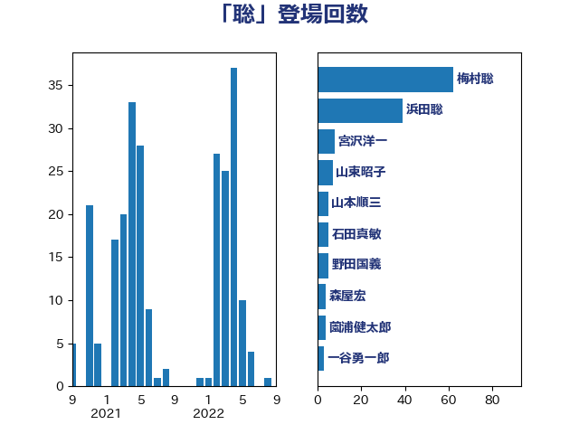

単語「聡」

| 梅村聡 | 日本維新の会 | 62 回 |
| 浜田聡 | NHK党 | 39 回 |
| 宮沢洋一 | 自由民主党 | 8 回 |
| 山東昭子 | 自由民主党 | 7 回 |
| 山本順三 | 自由民主党 | 5 回 |
| 石田真敏 | 自由民主党 | 5 回 |
| 野田国義 | 立憲民主党 | 5 回 |
| 森屋宏 | 自由民主党 | 4 回 |
| 薗浦健太郎 | 自由民主党 | 4 回 |
| 一谷勇一郎 | 日本維新の会 | 3 回 |
| 吉田忠智 | 立憲民主党 | 3 回 |
| あかま二郎 | 自由民主党 | 2 回 |
| 古屋範子 | 公明党 | 2 回 |
| 古川俊治 | 自由民主党 | 2 回 |
| 堀井巌 | 自由民主党 | 2 回 |
| 平口洋 | 自由民主党 | 2 回 |
| 本村伸子 | 日本共産党 | 2 回 |
| 松村祥史 | 自由民主党 | 2 回 |
| 玉木雄一郎 | 国民民主党 | 2 回 |
| 田村憲久 | 自由民主党 | 2 回 |
| 萩生田光一 | 自由民主党 | 2 回 |
| 足立康史 | 日本維新の会 | 2 回 |
| 野村哲郎 | 自由民主党 | 2 回 |
| 金田勝年 | 自由民主党 | 2 回 |
| 長谷川岳 | 自由民主党 | 2 回 |
| あべ俊子 | 自由民主党 | 1 回 |
| 上野通子 | 自由民主党 | 1 回 |
| 大西健介 | 立憲民主党 | 1 回 |
| 小里泰弘 | 自由民主党 | 1 回 |
| 山口俊一 | 自由民主党 | 1 回 |
| 岸田文雄 | 自由民主党 | 1 回 |
| 川田龍平 | 立憲民主党 | 1 回 |
| 後藤茂之 | 自由民主党 | 1 回 |
| 木原誠二 | 自由民主党 | 1 回 |
| 東徹 | 日本維新の会 | 1 回 |
| 松下新平 | 自由民主党 | 1 回 |
| 柴田巧 | 日本維新の会 | 1 回 |
| 根本匠 | 自由民主党 | 1 回 |
| 梅村みずほ | 日本維新の会 | 1 回 |
| 江渡聡徳 | 自由民主党 | 1 回 |
| 浅田均 | 日本維新の会 | 1 回 |
| 田嶋要 | 立憲民主党 | 1 回 |
| 田畑裕明 | 自由民主党 | 1 回 |
| 石原宏高 | 自由民主党 | 1 回 |
| 福岡資麿 | 自由民主党 | 1 回 |
| 福田昭夫 | 立憲民主党 | 1 回 |
| 細田博之 | 自由民主党 | 1 回 |
| 義家弘介 | 自由民主党 | 1 回 |
| 藤川政人 | 自由民主党 | 1 回 |
| 西田実仁 | 公明党 | 1 回 |
| 赤羽一嘉 | 公明党 | 1 回 |
| 越智隆雄 | 自由民主党 | 1 回 |
| 鈴木馨祐 | 自由民主党 | 1 回 |
| 高良鉄美 | 無所属 | 1 回 |